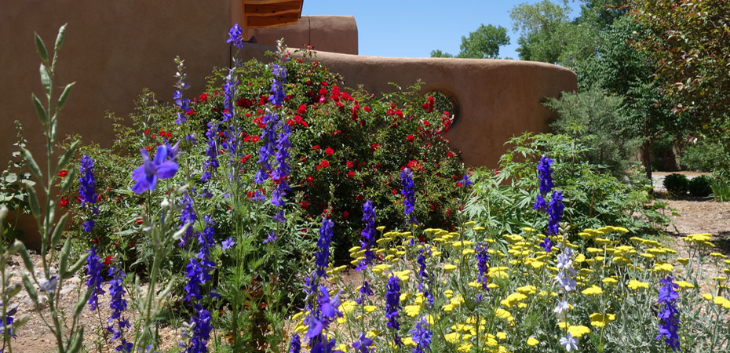
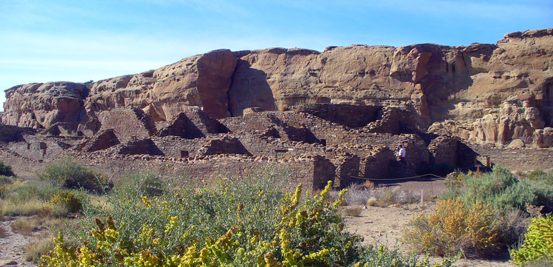
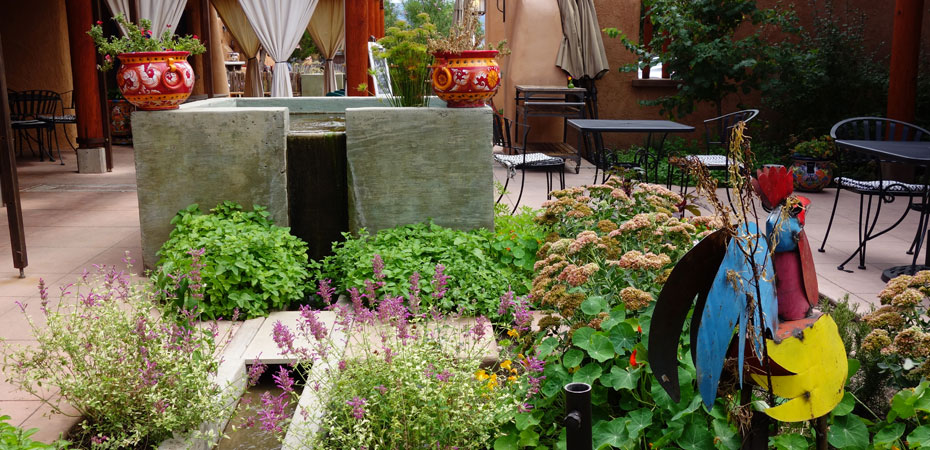
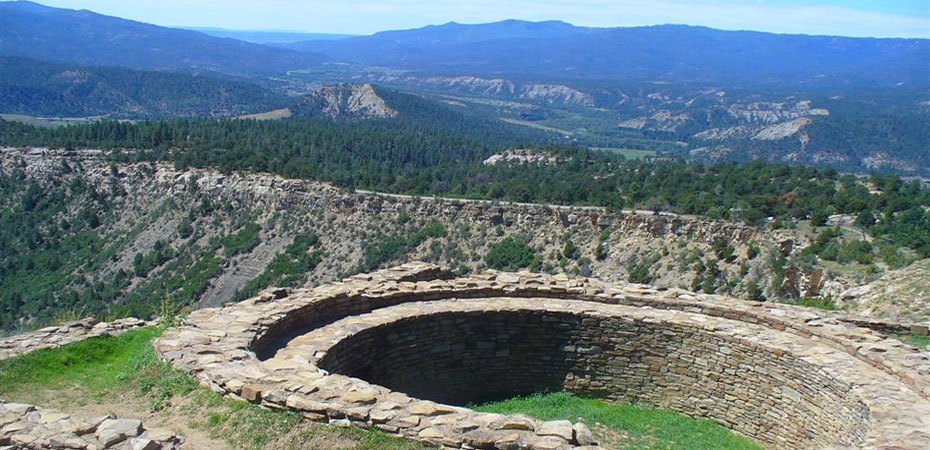
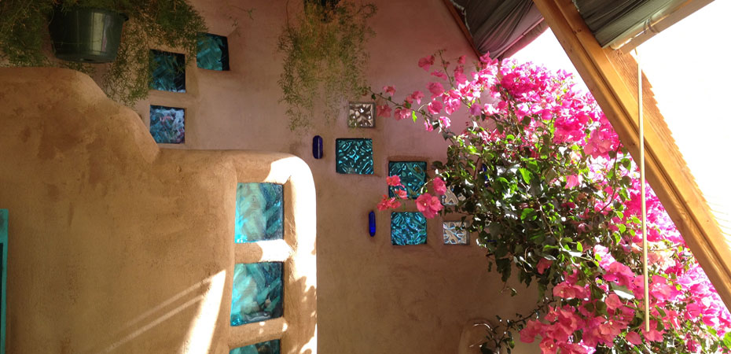
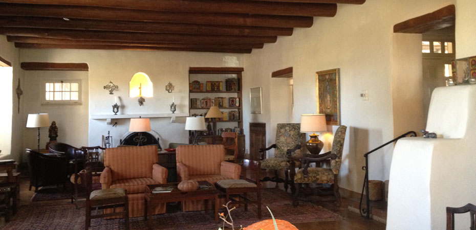

National Geographic Explorer meets This Old House
Come with us on an adventure through the Southwest to explore 1,000 years of building history within the gorgeous backdrop of our desert landscape, with an eye towards identifying means of attainable sustainability. We'll cover Pre-Puebloan, Navajo, Puebloan, Hispanic, European, and American styles... and even modern ideas like Earthships, Passiv Hauses, and hippie communes. We'll share ways we can make our architecture and landscapes work better for us now and in the future, learning from the past and building on that solid foundation with modern technology and materials.
Synopsis
Most programs on sustainability focus on modern glam architects and technology-dependent design, but for a millenia, humans in the Southwest used NATURAL forces and rhythms to their advantage, minimizing consumption, and staying relatively comfortable along the way. They knew how to make nature work for them, and in many cases, their solutions can outlast modern alternatives. With more than 20% of the people in New Mexico living in poverty and wondering where their next meal may come from, we want to offer viewers engaging, inspiring ways of re-connecting with this knowledge, and empower people to stay warm in winter, cool in summer, have access to safe and abundant water, and the ability to grow their own food. And we want to encourage a new generation of tourists who are concerned about sustainability to discover new reasons to visit, and connect people with several of our favorite locations and organizations that can make their experience great!
We'll turn viewers into fans by educating, and then empowering them, and by creating a space to develop a community after the show, where they can explore education components in Architectural History; Archaeology; Sustainable Design; and Southwest Cultures, and then celebrate their own successful projects by sharing with our network!
This program is imagined as a series of video-based education modules, designed to broaden scope each year, to eventually reach a national, then international audience by highlighting architecture and sustainability best practices from regions around the country, then around the world.
Basic class structure:
- Segment 1: Overview of one of the styles or periods (Pre-Puebloan, Puebloan, Hispanic, American, etc...) of historic architecture in New Mexico and the Southwest
- Segment 2: How modern designers are using the techniques of the historic style
- Segment 3: How to implement these techniques for ourselves and create a space we LOVE!






Sponsors
We are thrilled to announce our partnership with SINC, our fiscal sponsor, and with UNM-Taos, our digital media partner! This helps us with capacity building, connection to local organizations, and, best of all… makes your sponsorships and donations tax deductible!